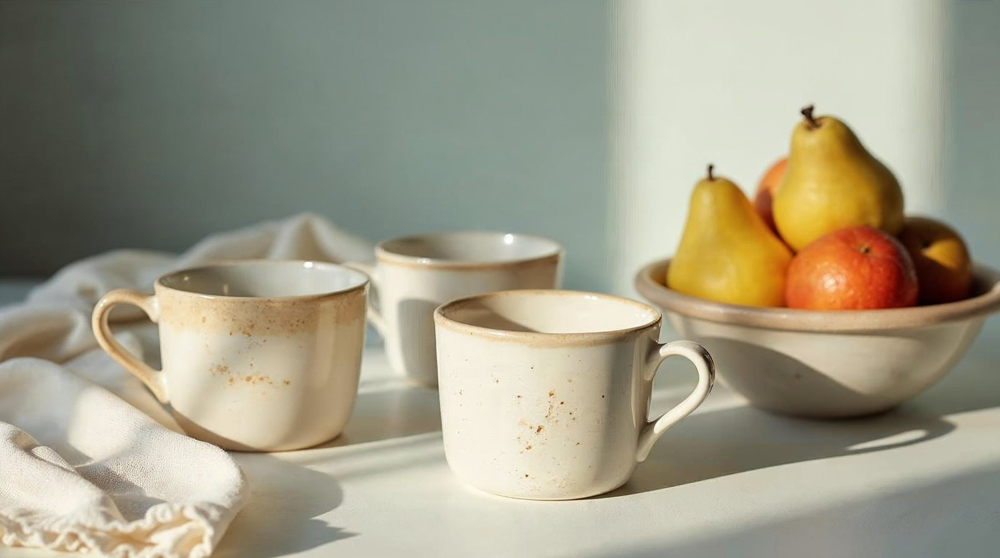
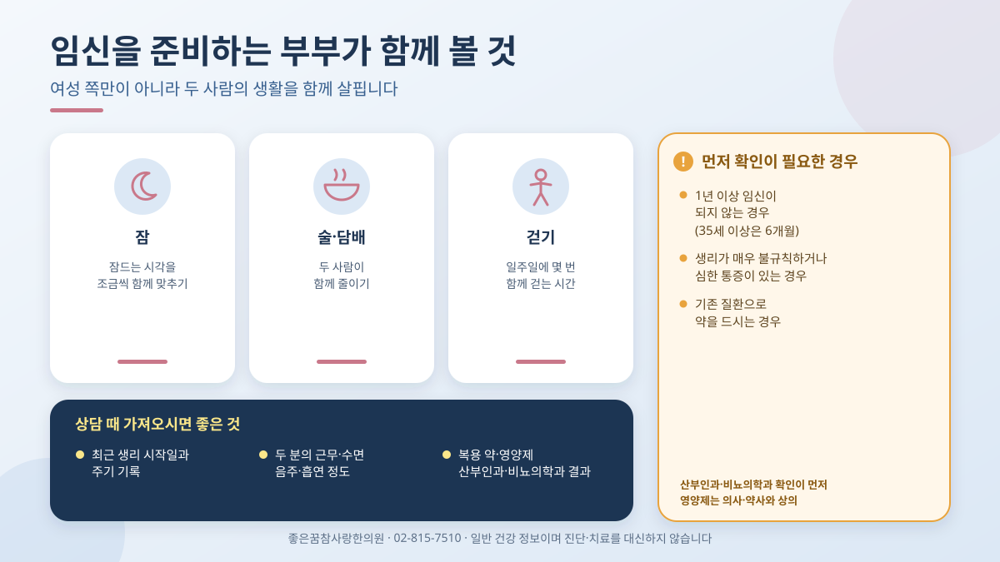

이종호 한의사 감수좋은꿈참사랑한의원 대표원장 (한의사 면허번호 19769)발행 2026-11-23 · 수정 2026-11-26
이 글의 차례
임신을 준비하는 부부는 두 사람의 잠과 근무 형태, 식사, 음주와 흡연, 복용 중인 약과 검사 결과를 함께 점검하는 것부터 시작합니다. 임신 준비는 한 사람만의 일이 아니어서, 부부가 함께 생활을 정리할 때 부담도 나눌 수 있습니다. 맞벌이라면 근무 시간과 잠, 식사가 서로 엇갈리는 경우도 흔합니다.
임신 준비를 시작하면 무엇을 먹어야 하는지, 무엇을 끊어야 하는지 정보가 쏟아져 오히려 마음이 바빠집니다. 저는 처음 오신 부부께도 맥을 짚으며, 거창한 계획보다 지금 두 분의 하루가 어떻게 흘러가는지를 먼저 여쭙습니다. 잠드는 시각, 저녁을 먹는 시각, 주말을 보내는 방식처럼 평범한 일상에 준비의 실마리가 많이 담겨 있기 때문입니다.
왜 이런 불편이 생길 수 있나요
- 잠이 부족하거나 밤낮이 바뀐 생활은 몸의 리듬과 생리 주기에 영향을 줄 수 있습니다.
- 음주와 흡연은 임신 준비 과정에서 줄이거나 끊도록 일반적으로 권해지는 습관입니다.
- 체중이 크게 늘거나 줄어든 상태, 오래 드신 약도 함께 살펴야 하는 요소입니다.
- 임신이 잘 되지 않는 이유는 여성 쪽만이 아니라 남성 쪽에 있는 경우도 있어 두 사람을 함께 보는 것이 중요합니다.
준비 과정에서 생기는 부담도 몸에 영향을 줍니다. 생리가 시작될 때마다 실망하고, 가족이나 주변의 질문에 마음이 무거워지는 일이 반복되면 잠이 얕아지고 식사가 흐트러지기 쉽습니다. 이런 마음의 흐름도 몸 상태와 함께 살핍니다.
여성의 나이에 따라 준비 기간을 어떻게 잡을지도 달라집니다. 35세 이상이라면 생활을 정리하는 것과 함께 산부인과 검사를 조금 이르게 받아 두는 편이 계획을 세우는 데 도움이 됩니다.

먼저 이렇게 여쭙니다
- 두 분의 잠드는 시각과 근무 형태는 어떤가요?
- 음주나 흡연을 하시나요?
- 복용 중인 약이나 영양제가 있나요?
- 산부인과나 비뇨의학과 검사를 받으신 적이 있나요?
- 준비한 지 얼마나 되었나요?
- 두 분 모두 최근에 크게 아프거나 수술을 받은 적이 있나요?
- 준비 과정에서 가장 부담스러운 것은 무엇인가요?
이 질문들은 정답을 맞히는 시험이 아닙니다. 모르는 것은 모른다고 하셔도 되고, 말하기 불편한 부분은 다음에 이야기하셔도 괜찮습니다. 두 분이 함께 오셨다면 각자 따로 이야기할 시간이 필요한지도 여쭙습니다.
스스로 점검해 보세요
- 두 사람이 잠드는 시각이 두 시간 넘게 차이 나는 날이 많다
- 한 사람 이상이 밤 12시를 넘겨 잠드는 날이 일주일에 사흘 넘는다
- 일주일에 세 번 넘게 술을 마시거나 한 번에 많이 마신다
- 둘 중 한 사람이라도 담배를 피운다
- 끼니를 거르거나 밤늦게 몰아서 먹는 날이 많다
- 생리 주기가 들쭉날쭉하거나 생리통이 심하다
- 준비 이야기만 나오면 서로 예민해지거나 말을 피하게 된다
해당하는 항목이 많다고 해서 걱정하실 필요는 없습니다. 지금 바꿀 수 있는 것이 어디에 있는지 알려 주는 목록으로 보시고, 두 분이 함께 한두 가지를 골라 오늘부터 시작해 보세요.
일상에서 먼저 해 볼 수 있는 것
- 부부가 함께 잠드는 시각을 조금씩 맞추기
- 술과 담배를 함께 줄이기
- 엽산 등 영양제는 의사·약사와 상의해 챙기기
- 생리 주기를 기록해 두기
- 함께 걷는 시간을 일주일에 몇 번 정해 두기
두 사람의 생활은 무엇부터 맞춰 보면 좋을까요?
가장 먼저 권하는 것은 잠입니다. 한 사람은 새벽까지 일하고 다른 사람은 일찍 자는 생활이 이어지면 대화할 시간도, 함께 쉬는 시간도 줄어듭니다. 잠드는 시각을 한 번에 맞추기보다 일주일에 15~30분씩 앞당겨 두 사람의 간격을 좁혀 보세요.
식사는 하루 한 끼라도 함께 앉아 먹는 것부터 시작합니다. 맞벌이라면 평일 아침이나 주말 점심처럼 지킬 수 있는 한 끼를 정해 두면 좋습니다. 배달 음식이 잦다면 국물과 튀김을 줄이고 채소 반찬을 하나 더하는 정도로도 충분합니다.
술과 담배는 한 사람만 줄이면 오래가기 어렵습니다. 회식이 잦은 쪽이 있다면 회식 다음 날 일정을 서로 알고, 술자리에서 어떻게 거절할지 미리 정해 두는 것도 방법입니다. 금연이 어렵다면 보건소 금연 클리닉 같은 도움을 함께 알아보세요.
운동은 둘 다 무리하지 않는 정도가 좋습니다. 저녁 식사 뒤 30분 함께 걷기처럼 대화하며 할 수 있는 운동이면 생활도 맞추고 마음도 나눌 수 있어 일석이조입니다.
남편 쪽은 무엇을 함께 챙기면 좋을까요?
임신 준비라고 하면 아내의 몸만 떠올리기 쉽지만, 남편의 생활도 같은 무게로 살펴야 합니다. 잦은 회식과 과음, 흡연, 잠 부족, 오래 앉아 있는 생활은 남성 쪽에서도 일반적으로 줄이도록 권하는 습관입니다.
사우나나 뜨거운 물에 오래 몸을 담그는 습관, 노트북을 무릎 위에 오래 올려 두는 습관처럼 아래쪽에 열이 오래 머무는 생활도 한 번쯤 돌아보시길 권합니다. 복용 중인 약이나 운동 보충제가 있다면 비뇨의학과 진료 때 함께 알려 주세요.
두 사람이 같은 자리에서 생활을 정리하면 누가 더 노력해야 한다는 부담이 줄고, 서로의 하루를 이해하는 계기가 되기도 합니다.
예를 들면 이런 경우입니다
- 예를 들어 한 사람은 교대 근무, 다른 사람은 주간 근무를 하는 부부라면, 두 분의 근무표를 나란히 놓고 함께 잘 수 있는 날과 각자 보충해야 하는 날을 정리해 봅니다.
- 예를 들어 준비 기간이 길어지며 생리 예정일마다 둘 다 말수가 줄어드는 부부라면, 그 시기의 잠과 식사 변화를 함께 여쭙고 서로 부담을 덜 수 있는 대화 방법을 이야기합니다.
- 예를 들어 생리 주기가 불규칙해 배란 시기를 알기 어려운 분이라면, 주기 기록을 먼저 함께 정리하고 산부인과에서 확인해 볼 검사를 안내합니다.
- 예를 들어 이제 막 준비를 시작해 무엇부터 해야 할지 막막한 부부라면, 두 분의 하루 일과를 시간대별로 적어 보시도록 하고 그 가운데 가장 쉽게 바꿀 수 있는 한 가지부터 함께 고릅니다.
- 예를 들어 남편의 회식과 야근이 잦아 생활을 맞추기 어렵다는 부부라면, 회식이 있는 주와 없는 주를 나눠 각자 지킬 수 있는 것을 따로 정해 봅니다.
언제 검사를 받아 보는 것이 좋을까요?
생활을 정리하며 기다리는 기간에도 기준을 알아 두면 마음이 덜 조급합니다. 피임 없이 1년(35세 이상은 6개월) 동안 임신이 되지 않으면 산부인과와 비뇨의학과에서 두 사람 모두 검사를 받아 보시길 권합니다.
생리 주기가 매우 불규칙하거나 생리가 몇 달씩 없는 경우, 생리통이 해마다 심해지는 경우, 예전에 골반 쪽 수술이나 염증을 겪은 적이 있다면 기간을 기다리지 말고 먼저 확인하는 편이 좋습니다. 남편 쪽도 예전에 고환 쪽 수술이나 질환이 있었다면 미리 알려 주세요.
검사 결과가 나오면 결과지를 가져오셔서 함께 보셔도 좋습니다. 한의원에서는 그 결과와 시술 계획을 존중하면서, 두 분의 잠과 식사, 피로처럼 생활에서 함께 챙길 수 있는 부분을 살핍니다.
한의원에서 함께 살필 수 있는 경우
- 임신 준비 중 생활 리듬을 정리하고 싶은 경우 부부의 잠과 식사, 피로를 함께 살핍니다.
- 생리 주기가 불규칙하거나 생리통이 심한 경우 주기와 몸의 상태를 함께 살핍니다.
- 준비 기간이 길어지며 스트레스가 큰 경우 마음의 부담과 잠을 함께 살핍니다.
좋은꿈참사랑한의원에서는 오신 분마다 맥부터 짚으며 생활과 준비 과정을 여쭙고, 필요하면 복진 등으로 각자의 몸 상태를 더 살핍니다. 그다음 생활 리듬 조정, 침, 한약 상담 가운데 상태에 맞는 방법을 정하고, 산부인과·비뇨의학과 검사가 필요하다고 판단되면 먼저 안내합니다.
동작구 한의약 난임 지원 사업과 관련한 안내는 방문 전 전화(02-815-7510)로 확인해 주세요. 지원 대상인지는 보건소 기준에 따르니 보건소에서 확인하실 수 있습니다.
준비 기간에 지친 마음은 어떻게 돌보면 좋을까요?
준비가 길어지면 달력이 시험지처럼 느껴진다는 분이 많습니다. 배란일과 생리 예정일을 계속 세다 보면 하루하루가 긴장의 연속이 되고, 부부 사이의 시간도 숙제처럼 변하기 쉽습니다.
그럴 때는 일주일에 하루쯤은 임신 이야기를 하지 않는 날로 정해 보세요. 함께 산책하거나 영화를 보며 두 사람이 원래 좋아하던 시간을 되살리는 것이 생각보다 큰 쉼이 될 수 있습니다.
주변의 질문이 부담스럽다면 두 분이 미리 답을 정해 두는 것도 방법입니다. '때가 되면 알려 드릴게요'처럼 짧은 답을 준비해 두면 같은 질문에 매번 마음을 쓰지 않아도 됩니다.
기분이 가라앉아 일상이 버거운 날이 길게 이어진다면 그 마음도 진료실에서 말씀해 주세요. 필요하다고 판단되면 정신건강의학과 상담도 함께 안내해 드립니다.
체중과 몸의 상태도 함께 보나요?
네. 체중이 짧은 기간에 크게 늘거나 줄었다면 생리 주기가 흔들릴 수 있어 최근의 변화를 함께 여쭙니다. 다만 임신 준비를 이유로 급하게 굶거나 무리한 운동을 하는 것은 권하지 않습니다.
체중 관리가 필요하다면 끼니를 지키며 야식과 단 음료를 줄이는 쪽으로 천천히 조정합니다. 체성분을 함께 볼 필요가 있다고 판단되면 그때 인바디로 확인합니다.
한약 상담은 어떻게 정하나요?
한약은 진찰 뒤 필요하다고 판단될 때만 상담합니다. 그 전에 임신 가능성, 시술 일정, 복용 중인 약과 영양제를 먼저 확인합니다. 배란 유도제나 호르몬 주사처럼 시술 중에 쓰는 약이 있다면 그 일정에 맞춰 함께 드셔도 될지 신중하게 정합니다. 시술 중이라면 담당 산부인과(난임 병원)에도 알리고 의견을 먼저 들어 보시도록 안내합니다.
한약을 드시는 동안 임신이 확인되면 바로 복용을 멈추고 알려 주세요. 그 뒤의 진료는 산부인과 진료를 먼저 받으신 다음 다시 상의해 정합니다.
처음 오시면 어떤 순서로 살피나요?
처음 오시면 모든 분의 맥을 먼저 짚고, 준비를 시작한 시기, 생리 주기, 지금까지 받은 검사와 시술 계획을 여쭙습니다. 이어서 두 분의 근무 형태와 잠, 식사, 음주와 흡연, 복용 중인 약과 영양제를 차례로 확인합니다.
손발과 아랫배의 온기, 소화와 배변 상태도 함께 살피고, 이야기를 다 듣고 나면 다음 진료까지 두 분이 함께 지켜 볼 생활 목표를 두세 가지로 정리해 드립니다.
임신 가능성이 있다면 침과 한약 모두 진찰 뒤 상의해 정하니, 진료 전에 먼저 말씀해 주세요.
이렇게 기록해 오시면 상담이 쉬워집니다
- 최근 생리 시작일들과 주기
- 두 분의 근무 시간, 잠든 시간, 음주·흡연 정도
- 복용 중인 약과 영양제
- 산부인과·비뇨의학과 검사 결과지
생리 주기는 시작일만 적어도 충분히 쓸모가 있습니다. 여기에 생리 기간, 양이 많았던 날, 생리통 정도를 함께 적어 두면 주기가 얼마나 일정한지 한눈에 볼 수 있습니다. 배란 테스트기를 쓰고 계시다면 그 결과도 같은 곳에 적어 주세요.
남편분도 일주일 정도 잠든 시각과 술자리, 운동한 날을 적어 오시면 두 분의 생활을 나란히 놓고 볼 수 있습니다. 기록은 완벽할 필요가 없고, 빠진 날이 있어도 괜찮습니다. 휴대폰 달력에 한 줄씩 짧게 남기는 정도면 충분합니다.
달력을 넘길 때마다 두 분이 함께 마음 졸이셨을 시간을 생각하게 됩니다. 다음에 오시면 두 분의 일주일 기록을 나란히 놓고, 가장 지키기 어려웠던 것부터 여쭙겠습니다.
이런 증상은 먼저 확인이 필요합니다
- 1년 이상 임신이 되지 않는 경우(35세 이상은 6개월)
- 임신 가능성이 있는데 아랫배가 심하게 아프거나 피가 비치는 경우
이런 신호가 있으면 한의원보다 가까운 병원이나 응급실을 먼저 찾으세요.
함께 읽으면 좋은 글
- 아이를 갖고 싶어 진료를 받을 때 한의원에 무엇을 알려야 하나요?
- 임신을 준비하는 부부가 둘 다 야근이 잦을 때 생활 리듬은 어떻게 맞추나요?
- 임신 준비 중 남편 쪽 정액 검사 결과가 걱정될 때(남성 난임)는 무엇을 살피고 준비하나요?

여쭙는 것
- 두 분의 잠드는 시각과 근무 형태는 어떤가요?
- 음주나 흡연을 하시나요?
- 복용 중인 약이나 영양제가 있나요?
생활에서 해 볼 것
- 부부가 함께 잠드는 시각을 조금씩 맞추기
- 술과 담배를 함께 줄이기
- 엽산 등 영양제는 의사·약사와 상의해 챙기기
한의원에서 함께 살필 것
- 임신 준비 중 생활 리듬을 정리하고 싶은 경우 부부의 잠과 식사, 피로를 함께 살핍…
- 생리 주기가 불규칙하거나 생리통이 심한 경우 주기와 몸의 상태를 함께 살핍니다.
- 준비 기간이 길어지며 스트레스가 큰 경우 마음의 부담과 잠을 함께 살핍니다.
먼저 확인이 필요한 신호
- 1년 이상 임신이 되지 않는 경우(35세 이상은 6개월)
- 임신 가능성이 있는데 아랫배가 심하게 아프거나 피가 비치는 경우
한눈에 보는 표
| 구분 | 핵심 |
|---|---|
| 여쭙는 것 | 두 분의 잠드는 시각과 근무 형태는 어떤가요? 음주나 흡연을 하시나요? |
| 생활에서 해 볼 것 | 부부가 함께 잠드는 시각을 조금씩 맞추기 술과 담배를 함께 줄이기 |
| 한의원에서 함께 살필 것 | 임신 준비 중 생활 리듬을 정리하고 싶은 경우 부부의 잠과 식사, 피로를 함께 살핍니다. 생리 주기가 불규칙하거나 생리통이 심한 경우 주기와 몸의 상태를 함께 살핍니다. |
| 먼저 확인이 필요한 신호 | 1년 이상 임신이 되지 않는 경우(35세 이상은 6개월) 임신 가능성이 있는데 아랫배가 심하게 아프거나 피가 비치는 경우 |
자주 묻는 질문
난임 시술과 함께 진료를 받아도 되나요?
시술 일정과 복용 약을 알려 주시면 함께 진료를 받아도 될지 진찰 뒤 신중하게 정합니다. 담당 난임 병원 의료진에게도 한의원 진료 사실을 알려 주세요.
남편도 함께 가야 하나요?
함께 오시면 두 분의 생활을 같이 살펴볼 수 있어 좋습니다.
둘 다 퇴근이 늦은데 언제 가면 되나요?
평일 09:30~20:00(점심 13:00~14:00), 토·일·공휴일 09:30~15:00에 진료합니다. 전화(02-815-7510)로 함께 오실 시간을 정해 보세요.
임신을 준비하면서 한약을 먹어도 되나요?
임신 가능성, 복용 중인 약과 영양제, 시술 일정을 먼저 확인하고 진찰 뒤 상의해 정합니다. 한약으로 임신을 약속하지는 않습니다.
좋은꿈참사랑한의원은 재진 때 지난번 이야기부터 이어서 여쭙니다. 진료시간과 예약은 오시는 길에서 확인하세요.
어디서 상담받을 수 있나요?
좋은꿈참사랑한의원은 서울 동작구 만양로2길 2 신성빌딩 3층·5층(서울 동작구 상도동, 7호선 상도역 3번 출구 근처)에 있습니다. 한의사 3명(이종호 대표원장, 조영기 수석진료원장, 정원영 진료원장)이 진료합니다. 진료시간은 평일 09:30~20:00(점심 13:00~14:00), 토·일·공휴일 09:30~15:00이며, 방문 전 전화로 확인을 권합니다. 예약은 네이버 예약, 카카오톡 상담, 전화 02-815-7510로 받습니다.
이 글은 일반적인 건강 정보이며 개인의 진단이나 치료를 대신하지 않습니다. 증상이 있거나 복용 중인 약이 있다면 진료를 통해 확인하세요. 치료 효과는 개인마다 다를 수 있습니다.
작성 기준: 일반적으로 알려져 있는 건강 정보를 참고해 정리했습니다(대표원장 감수). 증상 기록은 1~2주 동안 하루 1회, 비슷한 시간에 적어 오시면 지난 상태와 비교하기 쉽습니다.